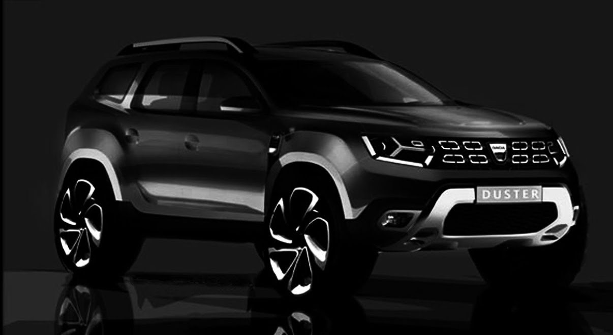
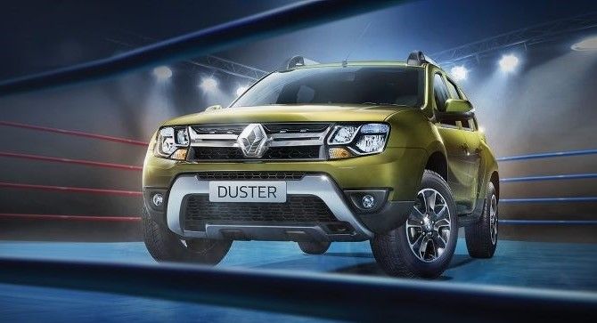
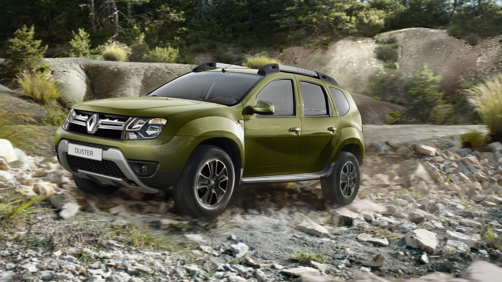
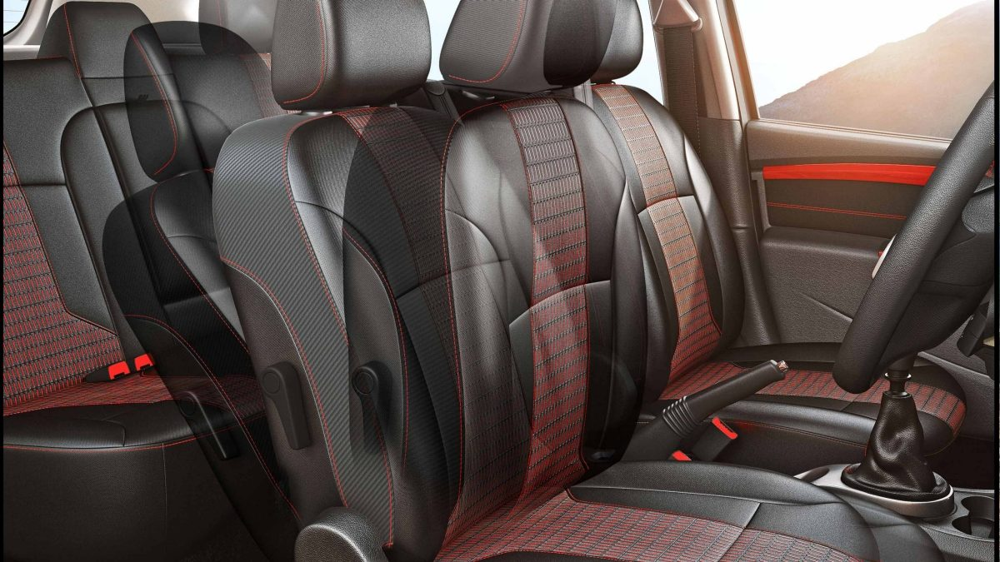
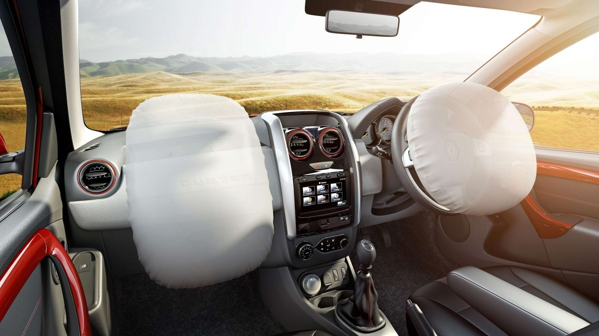
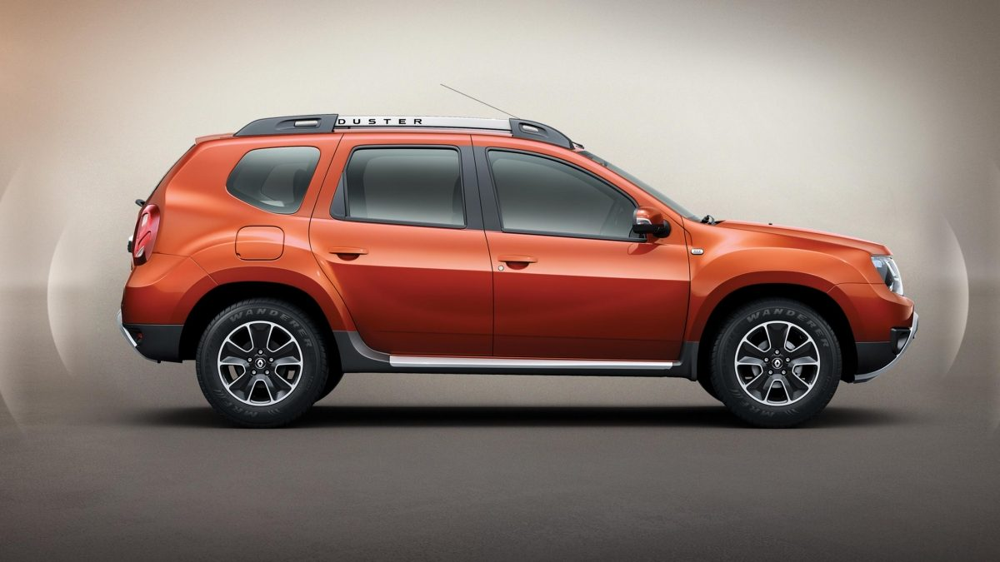
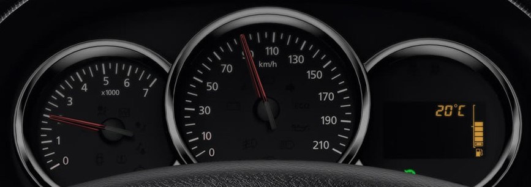

RENAULT DUSTER
With many first-in-segment features and the fluidic 2.0 design philosophy, this car is a built to make everyday an adventure.
REVIEW
Renault Duster price starts at Rs.7.95 lakh (Ex-Showroom, Delhi) and the top end variant Renault Duster 110PS RXZ AWD is priced at Rs. 13.57 lakh (Ex-Showroom, Delhi). You can choose between a 1.5-litre petrol or a 1.5-litre diesel engine. The diesel motor gets two states of tune - 85PS/200Nm and 110PS/245Nm, whereas the petrol makes 106PS and 142Nm. You can choose between a 5-speed manual or a CVT with the petrol motor, and a 6-speed manual or a 6-speed AMT with the more powerful diesel. Our pick would be the punchy 110PS diesel that seems at home on the open highways. Of course, it’s the only one in the pack to feature all-wheel drive. So, if getting dirty is your thing, the Duster is your only option for now.The Renault Duster is the company's only compact-SUV offering in the country and was one of the first vehicles to make the segment popular in India. Available with petrol and diesel drivetrains, the Duster also increases its appeal by offering CVT (petrol), AMT (diesel) and AWD (diesel) drivetrains.

Styling
Some bits, like the well-finished door handles and curvy instrument binnacle, do look nice, but elsewhere the hard plastics seem straight out of a budget hatchback. The pillar-like rear AC vent (engineered especially for India) stands out like a sore thumb, looks cheap, and also eats into middle-passenger legroom. Everything does feel solidly put together though and the fit between panels on the dashboard is decent. There is some more equipment now on top-end Dusters most notably the touch-screen audio with satellite navigation.The lack of excessive detailing gives it a robust and no-nonsense look. There is a facelift on the way, but for now, the squarish double-barrel headlights and chrome-rich grille gel well, while the scuff plate and plastic cladding on the lower portion of the bumpers hint at the Duster’s off-road ability. There are more interesting touches in the smart running boards, roof rails and the kink in the rear quarter glass, though some bits like the flimsy lift-type door handles point to the strict costs the Duster is built to.

Performance
The Renault Duster 110 feels responsive enough and power builds smoothly from as low as 1500rpm with a stronger shove around the 2000rpm mark. That’s not to say the engine is free from turbo lag. Driving up the twisty hill roads, we had to keep shifting down from third gear to second to maintain momentum. For the record, this motor churns out its 25.3kgm of peak torque at 2250rpm. Thanks to the engine’s broad spread of power, even part-throttle responses are good and you can actually pull cleanly from 30kph in fifth gear. But to get the most out of this engine, you need to stay within the 2000-4000rpm band. Hold gear and the engine will crawl further to its 5000rpm redline, at which point it does sound quite thrashy. In fact, in terms of overall refinement, the engine is just about average. The Duster 85 on the other hand is better for city driving with it's almost-zero lag and lighter, more progressive clutch.

Comfort & Quality
While the Renault Duster is spacious enough in its own right, it doesn’t feel as roomy as other SUVs in its segment, like the Tata Safari, for instance. However, ingress and egress is a breeze, there’s head- and legroom aplenty for all passengers and the cabin is wide enough to seat three average-sized adults in comfort on the rear seat. Also, the flat rear seat may not look like it is really comfortable, with great back and thigh support. Likewise, the front seats, which get lumbar-support adjustment, are also comfy enough for long distances, though we found the driver’s seat height adjuster cumbersome to use while seated.
And while it may lack four-wheel-drive hardware, even this front-wheel-drive Duster is quite adept off-road, so long as you are realistic about its abilities. The short gearing and the 30-degree approach and 35-degree departure angles allow the small SUV to clamber up hillocks, and it can also wade through knee-deep water if the need arises.

Safety
The manner in which the Renault Duster casually dismisses the worst patches of road makes it a more comfortable drive than all comparably priced saloons too. The suspension always goes about its business in a quiet manner, sharp bumps like expansion joints are easily filtered out and your passengers won’t be able to tell the size of the crater you just drove over.Even at highway speeds, the Duster SUV remains very composed and free from any undue up-and-down movement. Its wide footprint and relatively low centre of gravity also come together to give it good stability at all speeds and also under braking. A small complaint we have is with the calibration of the ABS system. Hit a bump under hard braking (even in dry conditions) and the ABS kicks in instantly, adding to the stopping distance. Body control is also good and roll is fairly well contained.

Features
The dashboard itself is quite functional, but places the air-con controls a bit low for comfortable access; the mechanically operated air-con switches, both front and rear, also feel quite rudimentary. Then there’s the unusual positioning of the electric mirror adjuster under the handbrake lever, and audio controls on the steering column (and hence out of sight) that take time getting used to. Thankfully, Renault has repositioned the power window switches from the dashboard to dedicated pods on the doors before launching the Duster SUV in India, but it’s still not perfect.The pillar-like rear AC vent (engineered especially for India) stands out like a sore thumb, looks cheap, and also eats into middle-passenger legroom. Everything does feel solidly put together though and the fit between panels on the dashboard is decent. There is some more equipment now on top-end Dusters most notably the touch-screen audio with satellite navigation.

Fuel Economy
At 1308kg, the Duster is light by SUV standards, and this more than anything else was bound to reflect in its fuel consumption. Driving in congested city streets, the Duster delivered a fuel economy figure of 11.8kpl. Out on the highway, the tall sixth gear makes the Duster a relaxed cruiser and allows it to stretch each litre of diesel for a remarkable 17 kilometres.Even at highway speeds, the Duster SUV remains very composed and free from any undue up-and-down movement. Its wide footprint and relatively low centre of gravity also come together to give it good stability at all speeds and also under braking.
